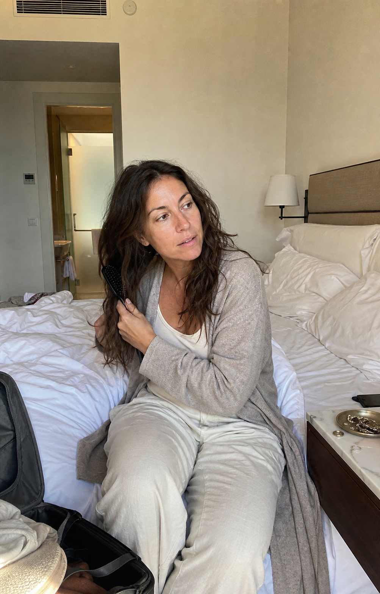

My Story
She took the picture I couldn't stop looking at. Then a few months later it finally clicked.

The picture I kept going back to
It was the third morning of my sister-in-law's wedding weekend, and I was sitting on the edge of a hotel bed brushing through my hair without thinking.
That was the part that surprised me.
The not thinking.
For about fourteen months I had been thinking about my hair every single morning. Whether the shampoo I used to love was the problem. Whether I needed to wash less or wash more. Whether the front pieces were going to behave today or whether I'd be wearing it up again.
That morning I just brushed.
And when I caught my reflection in the hotel mirror - bad lighting, not fancy at all - I had this very specific thought.
There she is.
My sister-in-law walked in to borrow earrings and pulled out her phone.
"Mara, your hair looks amazing in this light. Stand still."
She took the picture.
I keep it in a hidden folder now because it is, embarrassingly, the photo of myself I look at when I'm having a bad day. Not because of how I'm dressed. Not because of my face. Because of the hair I thought I had lost somewhere between the move and my 34th birthday.
Then I came home
We flew home on Sunday.
I washed my hair on Tuesday.
By Wednesday morning, it was back.
The same dull, slightly waxy, "is this clean or not" feeling. The front pieces frizzing in a way they never used to. That weird heaviness at the crown.
I stood in the bathroom and said out loud, to my partner, "What is wrong with me?"
He said the things partners say.
But it wasn't lighting.
Because I had used the exact same travel-size shampoo at the hotel. The exact same conditioner. The exact same brush.
The only thing that had changed between the hotel and home was the shower itself.
The list kept getting longer
I want to say I figured it out immediately. I did not.
I spent the next four months doing what I think a lot of women do.
I switched my shampoo three times. I bought a clarifying shampoo. Then a different clarifying shampoo. Then a clay one because a TikTok said. I added the bond-repair mask. I added the scalp serum. I added the leave-in.
I made an appointment with a dermatologist who looked at my scalp for about ninety seconds and said it looked fine and asked if I was under stress.
I made an appointment with my OB-GYN. The panel came back normal.
I tried a biotin supplement for ten weeks.
I tried washing every three days. Then every five.
I'm laying it out like this not to perform exhaustion. It's because I want you to know I tried. I'm not careless. I'm not the kind of woman who gives up at 35 and accepts that her hair is just what it is now.
And none of it stuck.
The bathroom counter started looking like evidence of my own confusion. A drawer of half-used bottles I couldn't throw out, because throwing them out meant admitting I'd been wrong about each one.
"Are you doing something different? You looked so good at the wedding."
The text that made it click
My sister-in-law texted me in March.
"Are you doing something different? You looked so good at the wedding."
That was the moment something clicked.
I was running the same products through whatever the city pipes were delivering to my building, every morning, before any of those products got the chance to work.
I went down the rabbit hole that night.
This is the part where I'd love to insert a dramatic study. I don't have one. What I do know is what's true in almost every American home: municipal water is disinfected with chlorine. That's standard public-health practice, and it works. Good for the water. Not nuanced about my hair.
Chlorine is an oxidiser.
On hair, an oxidiser can be rough on the thin natural oil layer that helps strands feel smooth, flexible, and alive - the layer your shampoo and conditioner are designed to clean around, not strip.
If chlorine in your tap water is the first thing touching your hair every morning, your shampoo is not starting from zero.
It is starting from behind.
Not "you have a hard water problem." I don't think I have a hard water problem. Nobody I know talks about hard water.
Just: the input was wrong, the whole time.
What changed after I put Lavero on my shower
I found Lavero in a Reddit thread that linked to it almost in passing. A shower head with a filter built into it - the whole idea being that the water gets filtered before it ever reaches your hair.
It's the first time I've heard of something like this. But after everything I'd thrown at my hair, the idea of fixing the water instead of adding one more product just made sense. I was actually pretty close to not ordering it. Glad I did.
I'm not going to pretend the first shower was a fireworks moment. The first shower was that the water felt softer-edged at the back of my neck and the steam smelled like nothing instead of like a swimming pool.
The actual change was boring.
By the third wash, my conditioner felt like it had somewhere to go. By the end of week two, I had stopped reaching for the clarifying shampoo. By week six, I caught my reflection in the elevator at work and the front pieces were behaving - and I had not done anything to them.
I did not "transform" my hair.
I gave the routine I already had a fair shower for the first time in a year and a half.
I want to be careful here. If the issue is hormones, bleach damage, medication, postpartum, or stress, those are real and a shower filter is not the answer.
But if you can put yourself in a hotel mirror - in the Airbnb, at your mother's house, on holiday - and you have looked at a version of yourself in a different bathroom and thought, "there she is," then the variable you have not tested is the water.
Why I finally tried it
Honestly, what made me actually try it was that Lavero has a 60-day guarantee. If your hair doesn't feel different, you can ask for your money back. You don't even have to ship the filter back.
If you have been blaming your shampoo, your hormones, your age, and yourself on some private rotation - please, before the next bottle, test the part of the routine you never thought of as part of the routine.
The water comes first.
Everything else comes after.
I wish I had figured that out fourteen wedding photos ago.
Try it in your own shower
Give your routine a fair first step.
Lavero is a premium filtered shower head designed to reduce chlorine before it touches your hair, so the products already on your shelf get a cleaner-feeling start.
- Designed to reduce up to 99% of chlorine and chlorine odor.
- Screws onto the existing shower arm by hand - no plumber, no tools.
- 60-day money-back guarantee. No filter return required.
Keep your products. Test the water.
Questions before you test it
The honest FAQ.
The point is not to make water sound scary. The point is to test the part of the routine most of us never thought to test.
Is Lavero a hard-water softener?
No. Lavero is not a water softener and should not be described that way. It is a filtered shower head designed to reduce chlorine and chlorine odor before the water touches your hair.
Do I have to change my routine?
No. That is the point. Keep your current shampoo, conditioner, and styling routine steady so you can test the water variable clearly.
How should I test it?
Use the full 60-day guarantee window. Do not judge it from one wash. The question is whether your hair feels different when the first step changes and everything else stays familiar.
What if my hair issue is something else?
Then the guarantee is there for exactly that reason. Hormones, bleach damage, medication, postpartum, and stress are real factors. Lavero is a water-first test, not a cure-all.